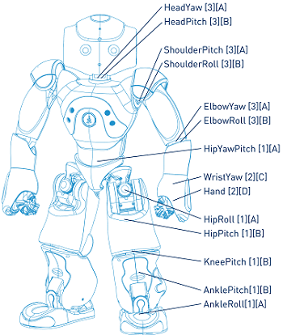

NAO Hardware | Product range | Motors & Kinematics | Components & Sensors | Optional devices
Motors & Kinematics | Motors | Kinematics 4.0 | Kinematics 3.3 | Kinematics 3.2
There are 3 types of motor in NAO - V. 4.0:
| Motor type 1 | Motor type 2 | Motor type 3 | |
|---|---|---|---|
| Model | 22NT82213P | 17N88208E | 16GT83210E |
| No load speed | 8 300 rpm ±10% | 8 400 rpm ±12% | 10 700 rpm ±10% |
| Stall torque | 68 mNm ±8% | 9,4 mNm ±8% | 14,3 mNm ±8% |
| Nominal torque | 16.1 mNm | 4.9 mNm | 6.2 mNm |
For each motor, there are several types of speed reduction ratio:
| Motor type 1 | Motor type 2 | Motor type 3 | |
|---|---|---|---|
| Type A | 201.3 | 150.27 | |
| Type B | 130.85 | 173.22 | |
| Type C | 50.61 | ||
| Type D | 36.24 |
This diagram reprensents the motor type and reduction ratio for each joint in NAO V. 4.0:

Legend: Joint Name[Motor Type][Reductor Type] |
Joints | Motor | Reduction ratio |
| Head | |||
| HeadYaw | Type 3 | Type A | |
| HeadPitch | Type 3 | Type B | |
| Arm | |||
| ShoulderPitch | Type 3 | Type A | |
| ShoulderRoll | Type 3 | Type B | |
| ElbowYaw | Type 3 | Type A | |
| ElbowRoll | Type 3 | Type B | |
| WristYaw | Type 2 | Type C | |
| Hand | Type 2 | Type D | |
| Leg | |||
| HipYawPitch | Type 1 | Type A | |
| HipRoll | Type 1 | Type A | |
| HipPitch | Type 1 | Type B | |
| KneePitch | Type 1 | Type B | |
| AnklePitch | Type 1 | Type B | |
| AnkleRoll | Type 1 | Type A | |
There are 2 types of motor in NAO - V. 3.3:
| Motors | Motor type 1 | Motor type 2 |
|---|---|---|
| Model | RE-Max 17 | RE-Max 24 |
| No load speed | 11 900 rpm | 8 000 rpm |
| Stall torque | 15,1 mNm | 59.5 mNm |
| Nominal torque | 3.4 mNm | 12.3 mNm |
For each motor, there are several types of speed reduction ratio:
| Speed Reduction ratio | Motor type 1 | Motor type 2 |
|---|---|---|
| Type A | 150.27 | |
| Type B | 173.22 | |
| Type C | 50.61 | |
| Type D | 36.24 | |
| Type E | 201.3 | |
| Type F | 130.85 |
The table below lists the motor type and reduction ratio for each joint in NAO - V. 3.3:
| Joints | Motor | Reduction ratio |
| Head | ||
| HeadYaw | Type 1 | Type A |
| HeadPitch | Type 1 | Type B |
| Arm | ||
| ShoulderPitch | Type 1 | Type A |
| ShoulderRoll | Type 1 | Type B |
| ElbowYaw | Type 1 | Type A |
| ElbowRoll | Type 1 | Type B |
| WristYaw | Type 1 | Type C |
| Hand | Type 1 | Type D |
| Leg | ||
| HipYawPitch | Type 2 | Type E |
| HipRoll | Type 2 | Type E |
| HipPitch | Type 2 | Type F |
| KneePitch | Type 2 | Type F |
| AnklePitch | Type 2 | Type F |
| AnkleRoll | Type 2 | Type E |
There are 4 types of motor in NAO - V. 3.2:
| Motors | Motor type 1 | Motor type 2 | Motor type 3 | Motor type 4 |
|---|---|---|---|---|
| Model | RE-Max 24 | RE-Max 17 | A-max12 | GM20 |
| No load speed | 8 000 rpm | 11 900 rpm | 12 300 rpm | 13 206 rpm |
| Stall torque | 59.5 mNm | 15,1 mNm | 1.52 mNm | 0.08 mNm |
| Nominal torque | 12.3 mNm | 3.4 mNm | 0.931 mNm | 0.08 mNm |
For each motor, there are several types of speed reduction ratio:
| Speed Reduction ratio | Motor type 1 | Motor type 2 | Motor type 3 | Motor type 4 |
|---|---|---|---|---|
| Type A | 201.3 | 150.27 | 800 | 372 |
| Type B | 130.85 | 173.22 |
The table below lists the motor type and reduction ratio for each joint in NAO - V. 3.2:
| Joints | Motor | Reduction ratio |
| Head | ||
| HeadYaw | Type 2 | Type A |
| HeadPitch | Type 2 | Type B |
| Arm | ||
| ShoulderPitch | Type 2 | Type A |
| ShoulderRoll | Type 2 | Type B |
| ElbowYaw | Type 2 | Type A |
| ElbowRoll | Type 2 | Type B |
| WristYaw | Type 3 | Type A |
| Hand | Type 4 | Type A |
| Leg | ||
| HipYawPitch | Type 1 | Type A |
| HipRoll | Type 1 | Type A |
| HipPitch | Type 1 | Type B |
| KneePitch | Type 1 | Type B |
| AnklePitch | Type 1 | Type B |
| AnkleRoll | Type 1 | Type A |